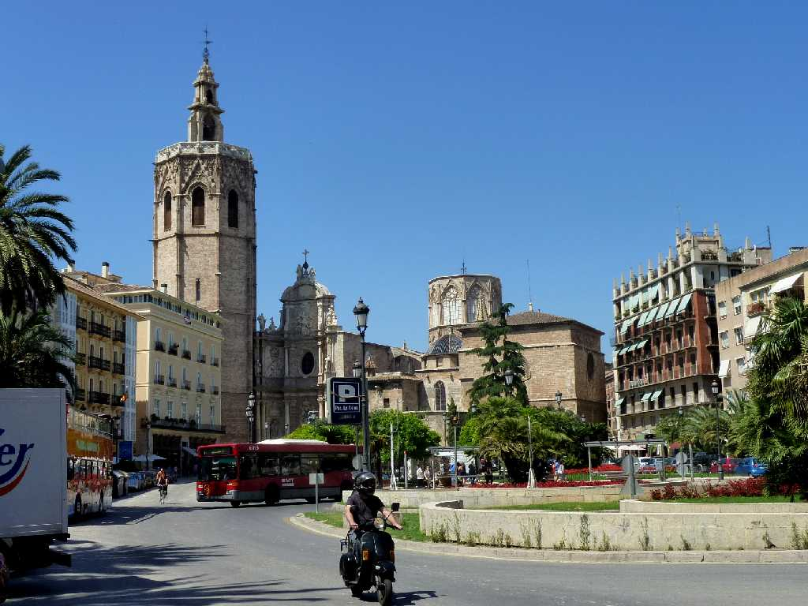
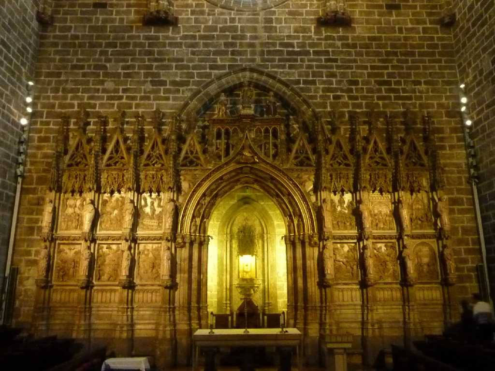
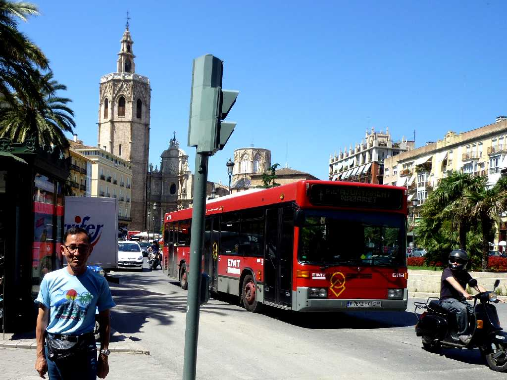

Catedral de Valencia Plaza de la Raina
３世紀に創られたモスクを教会に改修したバレンシア大聖堂の中には最後の晩餐に用いられた聖杯がある

Holy Chalice Capilla del Santo Grial Catedral de Valencia
キリストが最後の晩餐でワインは私の血であると言って用いたと云われる聖杯は年代測定でキリストが生まれる前に創られたもの 使徒ペテロから代々の教皇に受継がれ１４３７年に納められた

June 4 2010 Plaza de la Raina